Sortwick: Puzzle di riordinoRiordina gli scaffali. Restaura il paese.
Riordina gli scaffali. Fai tris. Riporta in vita un paesino di mare e conosci chi ci abita.
Gratis su iPhone · Si gioca offline · Senza account


Che cos'è Sortwick?
Sortwick è un gioco di riordino gratuito per iPhone e iPad. Sposti gli oggetti da uno scaffale all'altro, ne unisci tre uguali per eliminarli e spendi le stelle vinte per restaurare Saltwick, un paesino di mare. Un puzzle di riordino accogliente per adulti che amano l'ordine e una sfida vera: regole triple match, centinaia di livelli, si gioca offline.
- Gratis su iPhone
- iOS 17 o successivo
- Si gioca offline
- 9 lingue
- Senza account
Come si gioca, in 10 secondi
Sposta gli oggetti da uno scaffale all'altro e forma tris per eliminarli. Ogni livello ha una soluzione, e ogni vittoria dà stelle da spendere per restaurare Saltwick: il faro, il caffè, la lanterna, un posto alla volta.
Tocca un oggetto, tocca uno scaffale
Sposti un oggetto alla volta su uno scaffale con un posto libero.
Tre uguali spariscono
Metti insieme tre oggetti uguali e liberano lo scaffale.
Vinci stelle, restaura Saltwick
Ogni livello superato dà stelle per il prossimo posto del paese.
Uno sguardo al gioco
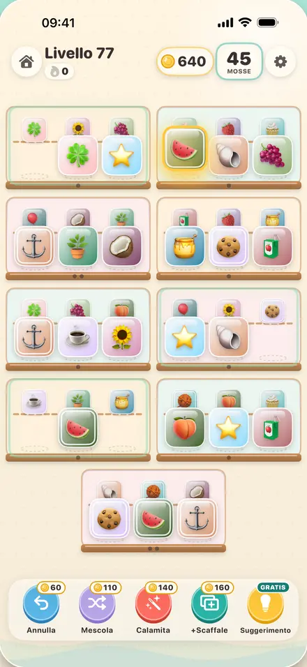
Fai tris, svuota lo scaffale 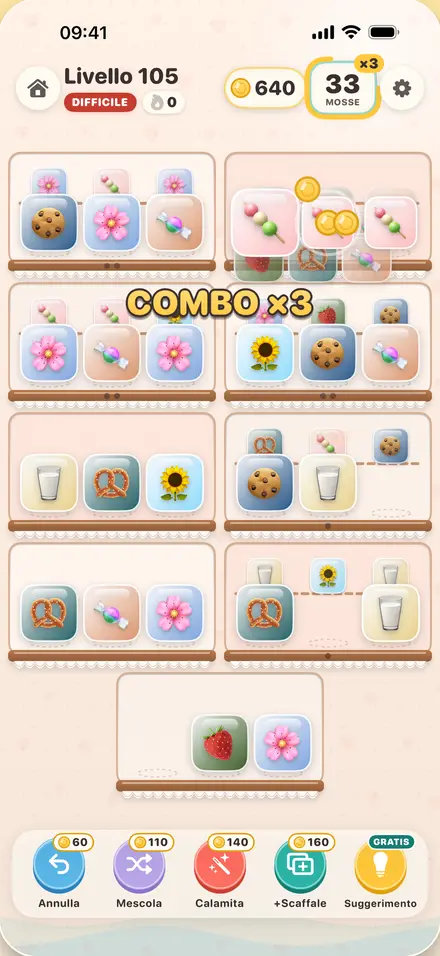
Concatena i tris, fai combo 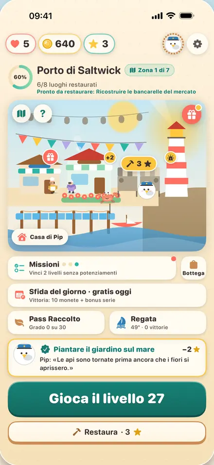
Un paese che ti risponde 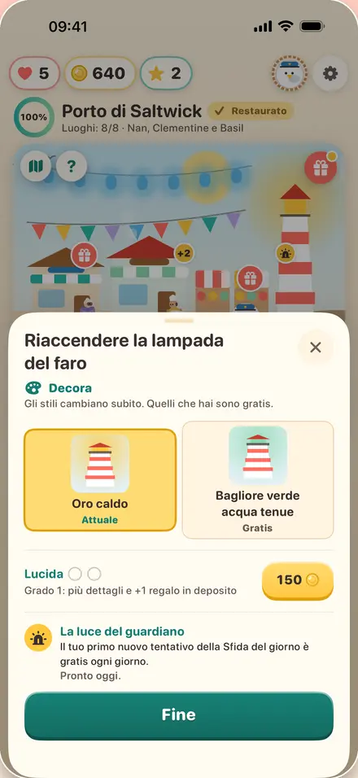
Decora ogni posto a modo tuo 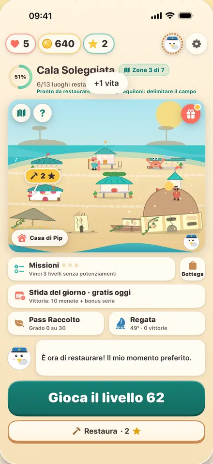
I posti restaurati ti fanno regali 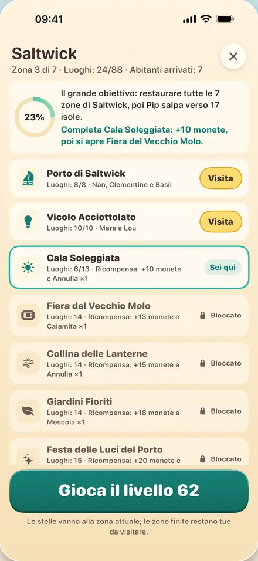
Sette zone da far rinascere 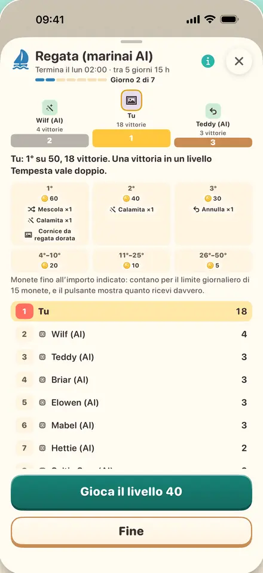
Arriva in vetta ogni settimana
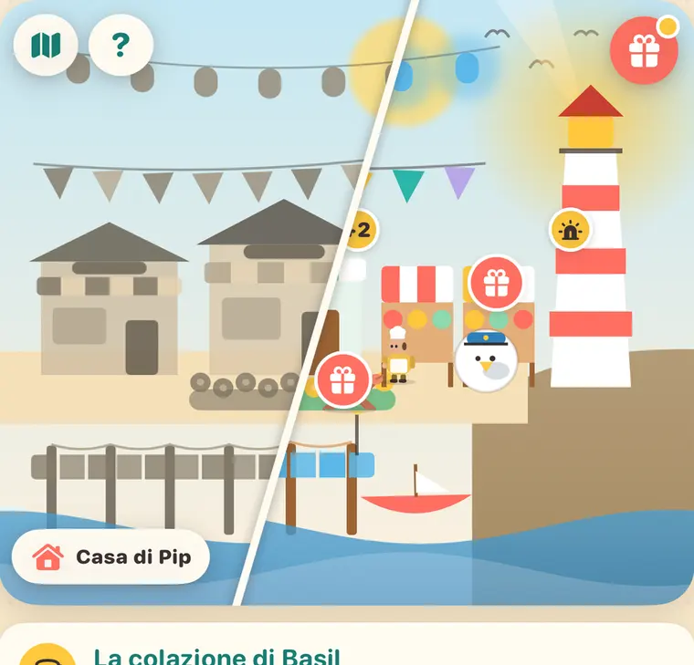
Un paese che ti risponde
Vinci stelle, ricostruisci Saltwick
- Sette zone da restaurare, dal Porto di Saltwick alla Festa delle luci del porto, e poi le isole
- Abitanti come Nan, Basil, Clementine e Mara si trasferiscono appena la loro casa è sistemata: passeggiano sul lungomare, e con un tocco ti dicono una battuta
- Ogni restauro è una breve conversazione: l'abitante parla, Pip il gabbiano del porto risponde
- Il forno e il faro servono a qualcosa: la colazione di Basil aggiunge 2 mosse al tuo primo livello del giorno, e il guardiano del faro ti paga il primo nuovo tentativo della Sfida del giorno
Conosci gli abitanti

Pip
Pip, il gabbiano del porto, ti dà il benvenuto a Saltwick e ha una risposta per tutti.

Nan
Nan torna a vivere qui appena il suo angolo di porto è restaurato, e ha sempre una battuta per te.

Clementine
Clementine, il granchio del lungomare, ti risponde con un tocco.
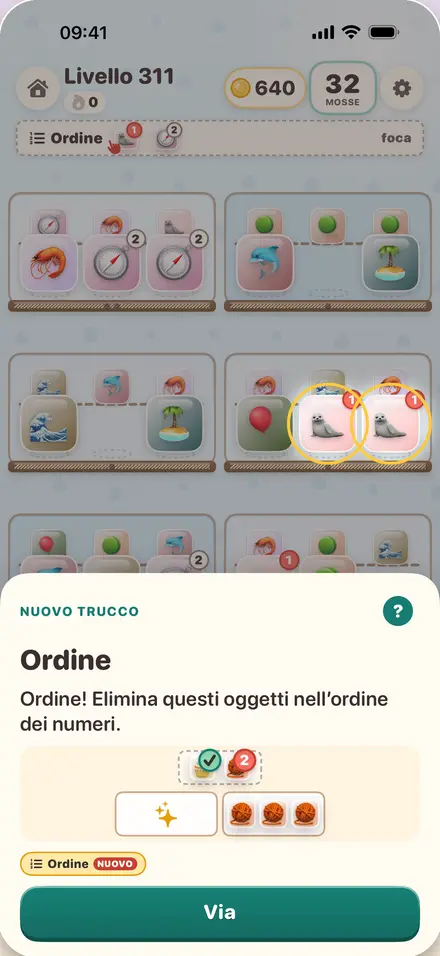
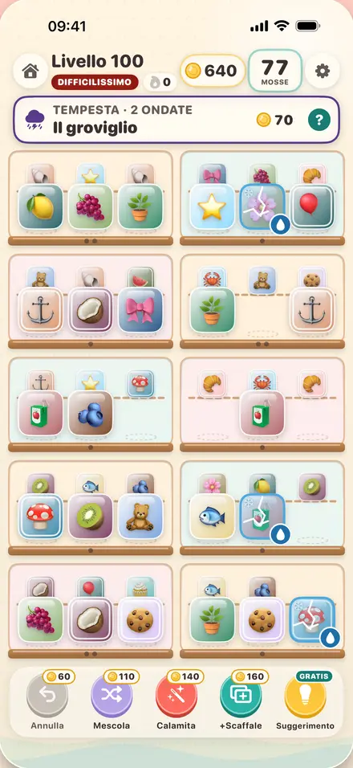
Trucchi nuovi, uno alla volta
- Scaffali crepati, scivoli, giostre, banconi, bufere e ordini si aggiungono a ghiaccio, lucchetti, regali, catene, casse, nebbia, livelli a tempo e nastro trasportatore
- Una scheda di inizio livello mostra ogni trucco nuovo con gli oggetti del livello prima della tua prima mossa, e la guida "Come si gioca" tiene ogni regola a un tocco
- I trucchi si combinano, arrivano le varianti, e i doppi turni portano una seconda ondata di oggetti sul tabellone
Una sfida vera
- La difficoltà sale davvero: livelli DIFFICILI, livelli DIFFICILISSIMI, livelli Tempesta, livelli misteriosi e pause tranquille
- Tabelloni a torri, a scale, a colonne separate, a scaffali aperti e altro ancora
- I potenziamenti Annulla, Mescola e Calamita quando li vuoi tu, mai imposti
Perché Sortwick è diverso
Un download leggero
Circa 27 MB. Si installa in un attimo e lascia spazio alle tue foto.
Si gioca offline
Senza account e senza connessione: in treno, in aereo, ovunque.
Mosse, non un conto alla rovescia
I livelli hanno un limite di mosse, così puoi fermarti a pensare. Solo i rari livelli a tempo corrono contro l'orologio.
Nessuna pubblicità forzata nei primi 100 livelli
Le pubblicità tra i livelli sono rare per scelta e non arrivano mai dopo una sconfitta. I video con ricompensa sono sempre una tua scelta.
Fatto per ogni schermo
Sortwick si adatta al tuo schermo: l'iPhone, l'ampio schermo interno di un pieghevole e l'iPad.
Accogliente e offline
- Si gioca offline, senza account
- Regali del giorno, missioni, una Sfida del giorno, una Regata settimanale e una stagione di 28 giorni
- Colleziona le carte dell'album, sblocca gli obiettivi e arreda la casa di Pip con i mobili che collezioni
- Gratis. Gli acquisti non cambiano mai la soluzione di un livello, e le casse dell'album non si comprano: le probabilità sono sempre mostrate
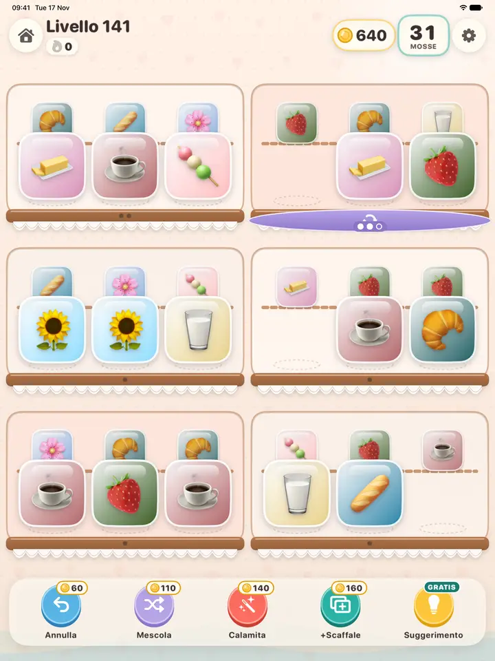
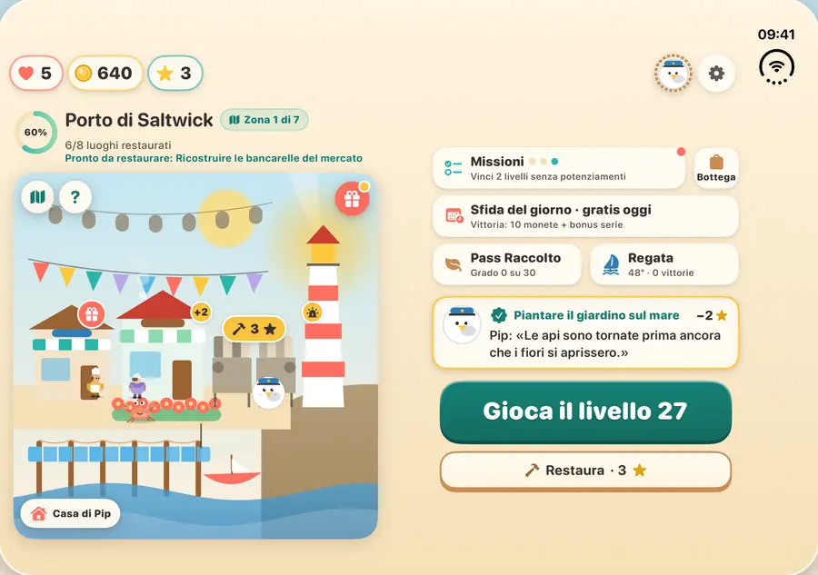
In arrivo
Android: aiutaci a provarlo
Sortwick per Android è in test chiuso su Google Play e non è ancora uscito. Partecipa al test, gioca in anteprima e dicci cosa ne pensi.
Partecipa al test AndroidLa pagina del test è in inglese.

Domande
Che cos'è un gioco di riordino di oggetti?
Un gioco di riordino di oggetti (detto anche goods sort, triple match o match 3 di oggetti) è un puzzle in cui sposti gli oggetti tra gli scaffali finché tre uguali si trovano insieme e spariscono. Sortwick è un gioco di questo tipo, con un paesino di mare da restaurare con le stelle che vinci.
Sortwick è gratis?
Sì. Scaricarlo e giocare è gratis. Gli acquisti sono facoltativi e non cambiano mai la soluzione di un livello, e i video con ricompensa sono sempre una tua scelta.
Sortwick funziona offline?
Sì. I livelli, il paese e i tuoi progressi funzionano senza internet e senza account. Solo gli extra come classifiche, acquisti e video con ricompensa richiedono una connessione.
Esiste un gioco di riordino senza pubblicità forzate?
In Sortwick nessuna pubblicità interrompe i primi 100 livelli, e non ne arriva mai una dopo una sconfitta. In seguito le pubblicità tra i livelli sono rare per scelta, e un solo acquisto ("Rimuovi pubblicità") le elimina del tutto.
In che cosa Sortwick è diverso dagli altri giochi di riordino?
I livelli hanno un limite di mosse e non un conto alla rovescia (solo i rari livelli a tempo corrono contro l'orologio), e ogni livello ha una soluzione. In più ci sono un paese con abitanti che ti rispondono, un download leggero di circa 27 MB e il gioco offline.
Come funzionano le vite?
Un livello fallito costa una vita; i primi livelli si riprovano gratis. Le vite si ricaricano da sole col tempo. Quando le finisci, un video gratuito te ne restituisce una, il negozio vende una ricarica in monete, VIP del Porto aggiunge una vita in più e il Pacchetto di benvenuto include 1 ora di vite illimitate.
Ci sono pubblicità?
Nessuna nei primi livelli. Poi i video con ricompensa sono sempre una tua scelta (una vita in più, qualche mossa in più, un potenziamento gratis). Le pubblicità tra i livelli sono rare per scelta: nessuna nei primi 100 livelli e mai dopo una sconfitta. "Rimuovi pubblicità" (un solo acquisto), VIP del Porto e qualsiasi acquisto recente le disattivano; i video facoltativi restano. Subito dopo il livello 1 il gioco chiede il tuo consenso pubblicitario (nel SEE, nel Regno Unito e in Svizzera) e se può usare il tuo identificatore pubblicitario; se dici di no, le pubblicità semplicemente non sono personalizzate.
Cosa posso comprare?
Tutto è facoltativo. Pacchetti da 500, 1.400, 3.100 e 8.500 monete; un Pacchetto di benvenuto una tantum con 900 monete, 6 potenziamenti e 1 ora di vite illimitate; VIP del Porto, un abbonamento mensile con 60 monete al giorno, un forziere settimanale, una vita in più e niente pubblicità tra i livelli; il Pass Raccolto Premium per la stagione di 28 giorni; e "Rimuovi pubblicità". I prezzi compaiono nella valuta del tuo App Store accanto a ogni pulsante Acquista, e Apple ti chiede conferma prima di addebitare. Le monete servono per continuare, per le vite e i potenziamenti; non cambiano mai la soluzione di un livello. Nelle impostazioni puoi fissare un limite di spesa giornaliero.
Come ripristino gli acquisti o annullo VIP del Porto?
Apri il negozio nel gioco e tocca "Ripristina acquisti", con lo stesso account Apple usato per comprare. VIP del Porto si rinnova ogni mese finché non lo annulli in Impostazioni iOS > il tuo nome > Abbonamenti, almeno 24 ore prima del rinnovo. I rimborsi sono gestiti da Apple.
Usa Game Center?
Sì, se hai effettuato l'accesso. Il tuo punteggio della Sfida del giorno e le tue vittorie nella Regata settimanale vanno in due classifiche, e 91 obiettivi seguono i tuoi progressi. Senza accesso non viene inviato nulla e il gioco è esattamente lo stesso; non mostra mai una schermata di accesso propria.
Quali dati raccoglie il gioco?
Nessun dato personale: non c'è un account e non abbiamo server che ricevono i tuoi dati. Il gioco invia statistiche di gioco anonime, senza dati personali, per aiutarci a bilanciarlo; puoi disattivarle nelle impostazioni. I progressi restano sul tuo iPhone e, se usi iCloud, nel tuo account iCloud. Le pubblicità arrivano da Google AdMob, che riceve i soliti dati pubblicitari, personalizzati solo con il tuo permesso. I punteggi Game Center e gli acquisti sono gestiti da Apple. I dettagli sono nell'informativa sulla privacy.
Quali dispositivi e lingue?
iPhone e iPad con iOS 17 o successivo. In italiano, inglese, tedesco, francese, spagnolo, portoghese (Brasile), romeno, giapponese e coreano.
Pronto a riordinare qualche scaffale?
Gratis sull'App Store. Pip ti aspetta al porto.